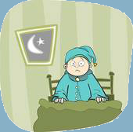

Wat is PTSS?
Psycho-educatie over posttraumatische stressstoornis


Psycho-educatie over posttraumatische stressstoornis
Na het meemaken van iets ingrijpends kan er sprake zijn van een posttraumatische stressstoornis.
Dit noemen we ook wel PTSS.
Misschien heb je hier wel eens over gehoord in de klas of op TV.
De oorzaak van PTSS is vaak een ingrijpende gebeurtenis. Deze kan je zelf hebben meegemaakt of hebben gezien, zoals bijvoorbeeld getuige zijn van een schietpartij. Ook getuige zijn van een gebeurtenis kan leiden tot een PTSS.
Je kan er ook nachtmerries over krijgen.
